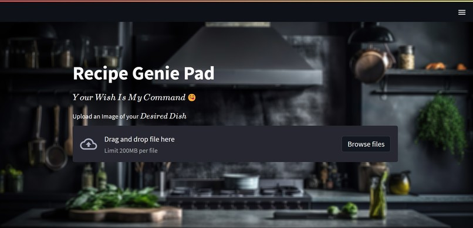
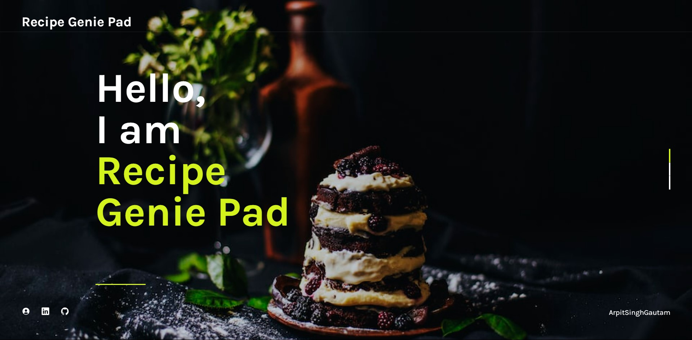
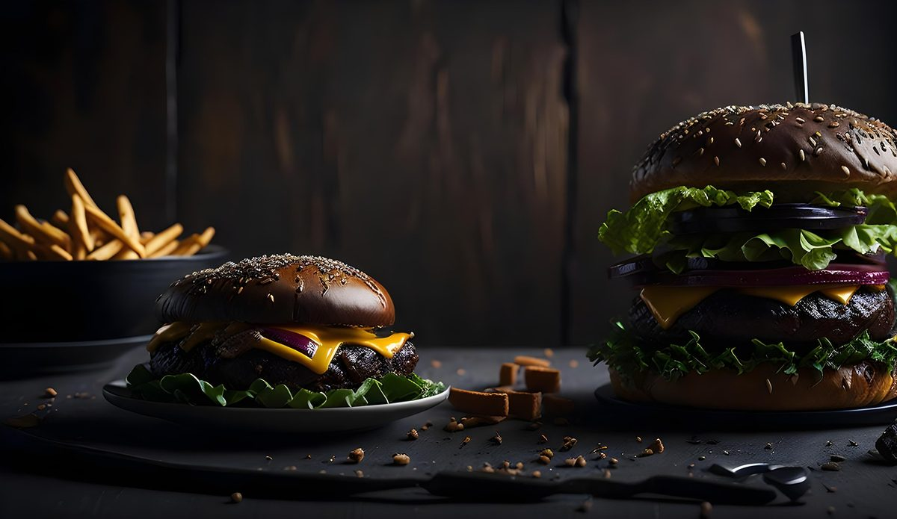

Recipe Genie Pad is a web app that identifies dishes from photos and suggests relevant recipes. It also offers automated food delivery search and charitable food donation suggestions - making cooking and eating more accessible and sustainable.

How It Works
Built with Python, Streamlit, Keras (InceptionV3 fine-tuned on a food image dataset), and Selenium for automated food delivery search. Users upload a photo of a dish; the model identifies it and returns recipe suggestions. Selenium automates delivery platform lookups for the identified dish.
Demo Video


Future Directions
Planned features include expanded food image recognition (more cuisines and dishes), a wine pairing recommender, more precise delivery search filters, a meal planning module, and an ingredient substitution tool.
Check it out